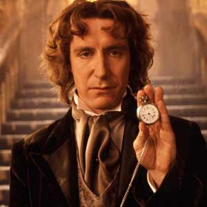

Portrayed by Paul McGann
|  | The Eighth Doctor made his first television appearance in the 1996 Doctor Who television movie, the first time the Doctor had returned to television screens since the end of the original series in 1989. Intended as a backdoor pilot for a new television series on the Fox Network, the movie managed to draw 5.5% of the US audience, according to Nielsen Ratings.[1] In the United Kingdom, it was received well, attracting over 9 million viewers and generally positive reviews. It was also generally well received in Australia. Although the movie failed to spark a new television series, the Eighth Doctor's adventures continued in various licensed spin-off media, notably BBC Books' Eighth Doctor Adventures novels, audio plays from Big Finish Productions, and the Doctor Who Magazine comic strip. As these stories spanned the nine years between 1996 and the debut of the new television series in 2005, some consider the Eighth Doctor one of the longest-serving of the Doctors. He is unarguably the longest-serving Doctor in the Doctor Who Magazine comic strip. In the wake of the positive reaction to the revived television series in 2005, several of the Eighth Doctor's Big Finish audio dramas were also broadcast on BBC7 radio in an edited form. The trailers for these broadcasts explained that these adventures took place before the destruction of Gallifrey as described in the revived TV series. In 2007, BBC7 aired a new series of Eighth Doctor audio adventures, created specifically for radio broadcast. Paul McGann has continued to portray the Eighth Doctor in the various audio spinoffs. |